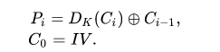

Oracle Padding
In cryptography, a padding oracle attack is an attack which uses the padding validation of a cryptographic message to decrypt the ciphertext. In cryptography, variable-length plaintext messages often have to be padded (expanded) to be compatible with the underlying cryptographic primitive. The attack relies on having a "padding oracle" who freely responds to queries about whether a message is correctly padded or not. Padding oracle attacks are mostly associated with CBC mode decryption used within block ciphers. Padding modes for asymmetric algorithms such as OAEP may also be vulnerable to padding oracle attacks.[1]
Symmetric
In symmetric cryptography, the padding oracle attack can be applied to the CBC mode of operation, where the "oracle" (usually a server) leaks data about whether the padding of an encrypted message is correct or not. Such data can allow attackers to decrypt (and sometimes encrypt) messages through the oracle using the oracle's key, without knowing the encryption key.
CBC Padding
The standard implementation of CBC decryption in block ciphers is to decrypt all ciphertext blocks, validate the padding, remove the PKCS7 padding, and return the message's plaintext. If the server returns an "invalid padding" error instead of a generic "decryption failed" error, the attacker can use the server as a padding oracle to decrypt (and sometimes encrypt) messages.

The mathematical formula for CBC decryption is

As depicted above, CBC decryption XORs each plaintext block with the previous ciphertext block. As a result, a single-byte modification in block C 1 {\displaystyle C_{1}} C_{1} will make a corresponding change to a single byte in P 2 {\displaystyle P_{2}} P_{2}.
Suppose the attacker has two ciphertext blocks C 1 , C 2 {\displaystyle C_{1},C_{2}} C_{1},C_{2} and they want to decrypt the second block to get plaintext P 2 {\displaystyle P_{2}} P_{2}. The attacker changes the last byte of C 1 {\displaystyle C_{1}} C_{1} (creating C 1 ′ {\displaystyle C_{1}'} C_{1}') and sends ( I V , C 1 ′ , C 2 ) {\displaystyle (IV,C_{1}',C_{2})} {\displaystyle (IV,C_{1}',C_{2})} to the server. The server then returns whether or not the padding of the last decrypted block ( P 2 ′ {\displaystyle P_{2}'} {\displaystyle P_{2}'}) is correct (equal to 0x01). If the padding is correct, the attacker now knows that the last byte of D K ( C 2 ) ⊕ C 1 ′ {\displaystyle D_{K}(C_{2})\oplus C_{1}'} {\displaystyle D_{K}(C_{2})\oplus C_{1}'} is 0 x 01 {\displaystyle 0x01} {\displaystyle 0x01}. Therefore, D K ( C 2 ) = C 1 ′ ⊕ 0 x 01 {\displaystyle D_{K}(C_{2})=C_{1}'\oplus 0x01} {\displaystyle D_{K}(C_{2})=C_{1}'\oplus 0x01}. If the padding is incorrect, the attacker can change the last byte of C 1 ′ {\displaystyle C_{1}'} C_{1}' to the next possible value. At most, the attacker will need to make 256 attempts (one guess for every possible byte) to find the last byte of P 2 {\displaystyle P_{2}} P_{2}. If the decrypted block contains padding information or bytes used for padding then an additional attempt will need to be made to resolve this ambiguity.[2]
After determining the last byte of P 2 {\displaystyle P_{2}} P_{2}, the attacker can use the same technique to obtain the second-to-last byte of P 2 {\displaystyle P_{2}} P_{2}. The attacker sets the last byte of P 2 {\displaystyle P_{2}} P_{2} to 0 x 02 {\displaystyle 0x02} {\displaystyle 0x02} by setting the last byte of C 1 {\displaystyle C_{1}} C_{1} to D K ( C 2 ) ⊕ 0 x 02 {\displaystyle D_{K}(C_{2})\oplus 0x02} {\displaystyle D_{K}(C_{2})\oplus 0x02}. The attacker then uses the same approach described above, this time modifying the second-to-last byte until the padding is correct (0x02, 0x02).
If a block consists of 128 bits (AES, for example), which is 16 bytes, the attacker will obtain plaintext P 2 {\displaystyle P_{2}} P_{2} in no more than 255⋅16 = 4080 attempts. This is significantly faster than the 2 128 {\displaystyle 2^{128}} 2^{128} attempts required to bruteforce a 128-bit key.